Actividad 5
Docker Es un proyecto de código abierto que automatiza el despliegue de aplicaciones dentro de contenedores de software, proporcionando una capa adicional de abstracción y automatización de virtualización de aplicaciones en múltiples sistemas operativos. crea contenedores ligeros y portables para que las aplicaciones puedan ejecutarse en cualquier máquina con Docker instalado.
Docker, ofrece un modelo de implementación basado en imágenes. Esto permite compartir una aplicación, o un conjunto de servicios, con todas sus dependencias en varios entornos. También automatiza la implementación de la aplicación en este entorno de contenedores.
Docker proporciona una manera estándar de ejecutar su código. El hardware del servidor y los contenedores que virtualiza el sistema operativo de un servidor.
MySQL
Empezamos descargando la imagen de MySQL:
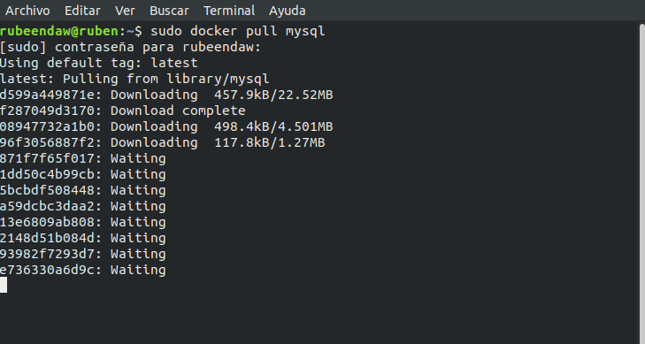
Creamos una red con el nombre my_net para conectar los contenedores entre sí:
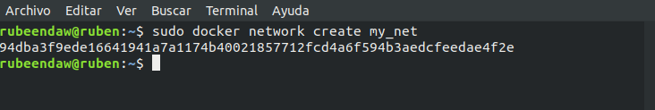
Creamos nuestro volumen para el mysql con el nombre vol_mysql:
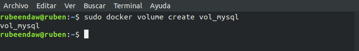
Vamos a usar estos parámetros de configuración:
MYSQL_ROOT_PASSWORD=12345678
MYSQL_DATABASE=wordpress
MYSQL_USER=wordpress
MYSQL_PASSWORD=wordpress
Aquí nos saldra un codigo como que se ha ejecutado correctamente:
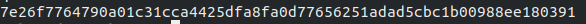
Por último comprobar que está funcionando:
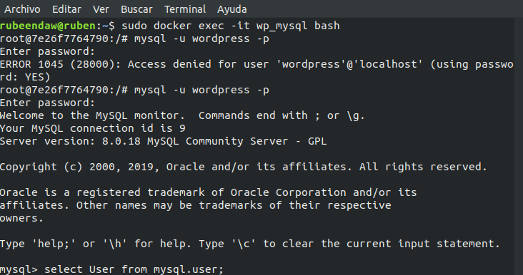
WordPress
Al igual que antes vamos a descargar la imagen, wordpress en este caso:
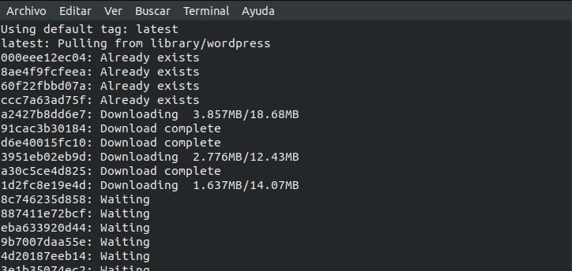
Creamos nuestro volumen para el wordpress con el nombre vol_wordpress:
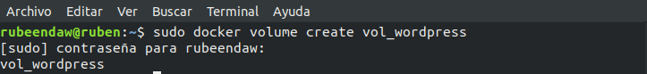
Vamos a usar estos parámetros de configuración:
WORDPRESS_DB_HOST=wp_mysql
WORDPRESS_DB_USER=wordpress
WORDPRESS_DB_PASSWORD=wordpress
Aquí vemos como se ha ejecutado correctamente:
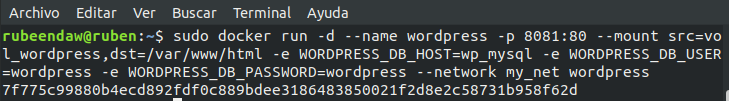
Después de comprobar que el mysql si que tiene las tablas y esta funcionando, el wordpress también carga pero no puede acceder al mysql, se intenta recuperar y tampoco:
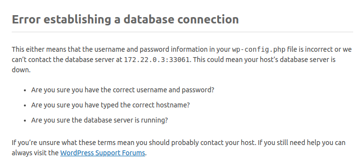
Lo que sí he podido comprobar es que si se detienen y se vuelve a arrancar el mysql sigue funcionando y el wordpress sigue sin funcionar…
Dockerfile
Ahora vamos a crear un dockerfile con los siguientes parámetros:
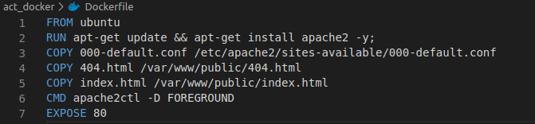
Creamos nuestro fichero de configuración con los siguientes datos para que en el dockerfile lo use correctamente:
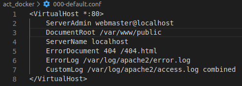
Ahora vamos a ejecutar el dockerfile con: sudo docker build .
Vemos como se ha montado correctamente y nos da la id que nos hace falta para el siguiente paso, si te fijas en mi caso la id no es la misma por que tenia un error y tuve que volver a hacer el build que lo hace con una id diferente y no me di cuenta que no tenía captura de ese paso.
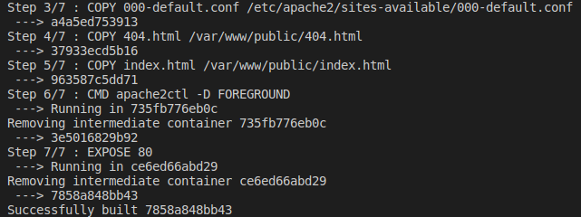
Por último ejecutamos el contenedor con el siguiente comando y la id del paso anterior que esta si es la buena que me salio a mi en mi último build que ya funciona
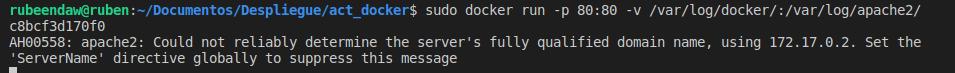
He creado un index.html que lo podéis ver en el dockerfile y aquí vemos como está funcionando.
También en el dockerfile podéis ver el fichero 404.html, aquí vemos como funciona cuando buscas algo que no existe:
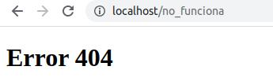